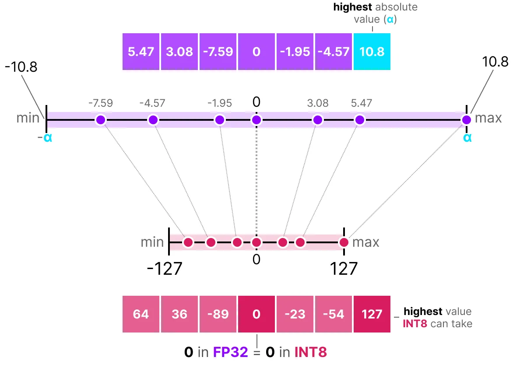
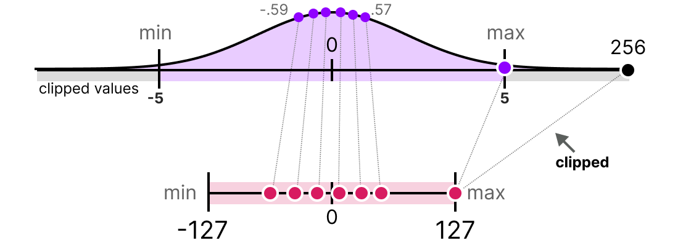
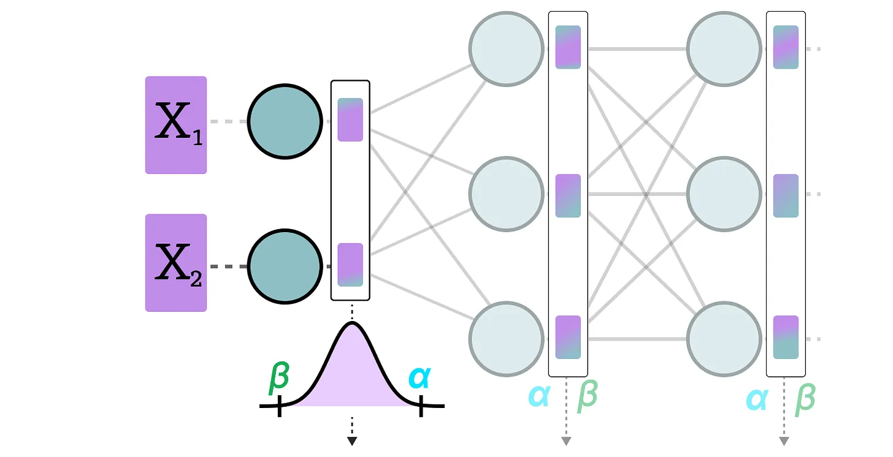
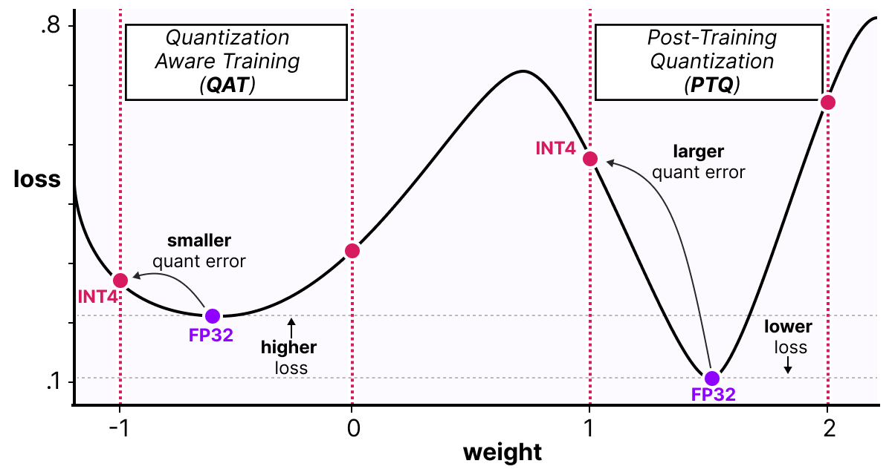

Quantization#
Deep Learning models are becoming increasingly powerful and large. Take the example of LLM (Large Language Models): the best open-source models, such as Llama 3.1, now have hundreds of billions of parameters.
Loading such a model on a single GPU is impossible. Even with the most powerful GPU on the market (the H100, with 80 GB of VRAM), multiple GPUs are needed for inference and even more for training.
In practice, we observe that the more parameters a model has, the better its performance. Therefore, we do not want to reduce the size of the models. However, we aim to decrease the memory space they occupy.
This course is heavily inspired by two articles: a visual guide to quantization and a detailed explanation of QLoRA. The images used also come from these two articles.
How to Represent Numbers on a Computer?#
To represent floating-point numbers on a computer, a certain number of bits are used. The IEEE 754 standard describes how bits can represent a number. This is done through three parts: the sign, the exponent, and the mantissa.
Here is an example of FP16 (16-bit) representation:

The sign determines the sign of the number, the exponent gives the digits before the decimal point, and the mantissa gives the digits after the decimal point. Here is an example in image form of how to convert the FP16 representation to a number.
Generally, the more bits used to represent a value, the more precise the value can be or the larger the range of values it can cover. For example, we can compare the precision of FP16 and FP32:

One last important thing to know: there are two ways to evaluate a representation. On the one hand, the dynamic range which indicates the range of values that can be represented, and the precision which describes the difference between two neighboring values.
The larger the exponent, the larger the dynamic range, and the larger the mantissa, the higher the precision (so two neighboring values are close).
In deep learning, we often prefer to use the BF16 representation instead of FP16. The BF16 representation has a larger exponent but lower precision.
The following figure illustrates the differences:

Now that we understand the concepts of floating-point number precision, we can calculate the memory space a model occupies based on the precision. In FP32, a number is represented by 32 bits, which corresponds to 4 bytes (1 byte equals 8 bits). To obtain the memory usage of a model, we can perform the following calculation: \(memory= \frac{n_{bits}}{8}*n_{params}\)
Take the example of a model with 70 billion parameters at different precision levels: double (FP64), full-precision (FP32), and half-precision (FP16). For FP64: \(\frac{64}{8} \times 70B = 560GB\) For FP32: \(\frac{32}{8} \times 70B = 280GB\) For FP16: \(\frac{16}{8} \times 70B = 140GB\)
We clearly see the need to find a way to reduce the size of the models. Here, even the half-precision model occupies 140 GB, which corresponds to 2 H100 GPUs.
Note: Here, we are talking about precision for inference. For training, since we need to keep activations in memory for gradient descent, we end up with many more parameters (see the section on QLoRA later in the course).
Introduction to Quantization#
The goal of quantization is to reduce the precision of a model by transitioning from a rich precision like FP32 to a lower precision like INT8.
Note: INT8 is the way to represent integers from -127 to 127 in 8 bits.

Of course, by reducing the number of bits to represent values, we lose precision. To illustrate this, let’s look at an image:

We notice a “grain” in the image, due to a lack of available colors to represent it. What we want is to reduce the number of bits to represent the image while preserving the precision of the original image as much as possible.
There are several ways to perform quantization: symmetric quantization and asymmetric quantization.
Quick Overview of Common Precisions#
FP16: The precision and dynamic range decrease compared to FP32.

BF16: The precision decreases significantly, but the dynamic range remains the same compared to FP32.

INT8: We switch to an integer representation.

Symmetric Quantization#
In the case of symmetric quantization, the range of values of our original floating-point numbers is mapped symmetrically onto the range of quantization values. This means that 0 in the floating-point numbers is mapped to 0 in the quantization precision.

One of the most common and simplest ways to perform this operation is to use the absmax (absolute maximum quantization) method. We take the maximum value (in absolute value) and perform the mapping relative to this value:

The formula is quite basic: let’s consider \(b\) the number of bytes we want to quantize, \(\alpha\) the largest absolute value. Then we can calculate the scale factor as follows: \(s=\frac{2^{b-1}-1}{\alpha}\) We can then perform the quantization of \(x\) as follows: \(x_{quantized}=round(s \times x)\) To dequantize and retrieve an FP32 value, we can do it this way: \(x_{dequantized}=\frac{x_{quantized}}{s}\)
Of course, the dequantized value will not be equivalent to the value before quantization:

and we can quantify the quantization errors:

Asymmetric Quantization#
Unlike symmetric quantization, asymmetric quantization is not symmetric around 0. Instead, we map the minimum \(\beta\) and the maximum \(\alpha\) of the range of the original floating-point numbers to the minimum and maximum of the quantized range. The most common method for this is called zero-point quantization.

With this method, 0 has changed position, which is why this method is called asymmetric.
Since 0 has been moved, we need to calculate the position of 0 (zero-point) to perform the linear mapping.
We can quantify as follows: \(s=\frac{128 - - 127}{\alpha- \beta}\) We calculate the zero-point: \(z=round(-s \times \beta)-2^{b-1}\) and: \(x_{quantized}=round(s \times x + z)\) To dequantize, we can then apply the following formula: \(x_{dequantized}=\frac{x_{quantized}-z}{s}\)
Both methods have their advantages and disadvantages; we can compare them by looking at the behavior on any \(x\):

Clipping and Range Modification#
The methods we have presented have a major flaw. These methods are not at all robust to outliers. Imagine that our vector \(x\) contains the following values: [-0.59, -0.21, -0.07, 0.13, 0.28, 0.57, 256]. If we perform our usual mapping, we will obtain identical values for all elements except the outlier (256):

This is very problematic because the loss of information is enormous.
In practice, we can decide to clip certain values to reduce the range in the floating-point space (before applying quantization). For example, we could decide to limit the values within the range [-5,5], and all values outside this range will be mapped to the maximum or minimum quantization values (127 or -127 for INT8):

By doing this, we greatly reduce the error on non-outliers but increase it for outliers (which can also be problematic).
Calibration#
In the previous section, we arbitrarily used a value range of [-5,5]. The selection of this value range is not random and is determined by a method called calibration. The idea is to find a value range that minimizes the quantization error for all values. The calibration methods used vary depending on the type of parameters we want to quantize.
Calibration for weights and biases: Weights and biases are static values (fixed after model training). These are values we know before performing inference. Often, since there are many more weights than biases, we keep the base precision on the biases and perform quantization only on the weights.
For weights, there are several possible calibration methods:
We can manually choose a percentage of the input range
We can optimize the MSE distance between the base weights and the quantized weights
We can minimize the entropy (with KL-divergence) between the base weights and the quantized weights
The percentage method is similar to the method we used previously. The other two methods are more rigorous and effective.
Calibration for activations: Unlike weights and biases, activations depend on the input value of the model. Therefore, it is very complicated to quantify them effectively. These values are updated after each layer, and we can only know their values during inference when the model layer processes the values. This leads us to the next section, which discusses two different methods for quantizing activations (and also weights). These methods are:
Post-training quantization (PTQ): Quantization occurs after model training
Quantization-aware training (QAT): Quantization is performed during training or fine-tuning of the model.
Post-Training Quantization (PTQ)#
One of the most common ways to perform quantization is to do it after model training. From a practical standpoint, this makes sense as it does not require training or fine-tuning the model.
Weight quantization is performed using either symmetric quantization or asymmetric quantization.
For activations, it’s different since we don’t know the range of values taken by the activation distribution. There are two forms of quantization for activations:
Dynamic quantization
Static quantization
Dynamic Quantization#
In dynamic quantization, we collect the activations after the data has passed through a layer. The layer distribution is then quantized by calculating the zeropoint and scale factor.

In this process, each layer has its own zeropoint and scale factor values, so the quantization is not the same.

Note: This quantization process occurs during inference.
Static Quantization#
Unlike dynamic quantization, static quantization does not calculate the zeropoint and scale factor during inference. Indeed, in the static quantization method, the zeropoint and scale factor values are calculated before inference using a calibration dataset. This dataset is assumed to be representative of the data and allows us to calculate the potential distributions taken by the activations.

After collecting the activation values across the entire calibration dataset, we can use them to calculate the scale factor and zeropoint that will then be used for all activations.
Difference Between Dynamic and Static Quantization#
Generally, dynamic quantization is slightly more precise as it calculates the scale factor and zeropoint values for each layer, but this process also tends to slow down the inference time.
Conversely, static quantization is less precise but faster.
PTQ: 4-bit Quantization#
Ideally, we would like to maximize quantization, i.e., 4 bits instead of 8 bits. In practice, this is not easy because it drastically increases the error if we simply use the methods we have seen so far.
However, there are a few methods that allow reducing the number of bits down to 2 bits (it is recommended to stay at 4 bits).
Among these methods, we find two main ones:
GPTQ (uses only the GPU)
GGUF (can also use the CPU in part)
GPTQ#
GPTQ is probably the most used method for 4-bit quantization. The idea is to use asymmetric quantization on each layer independently:

During the quantization process, the weights are converted into the inverse of the Hessian matrix (second derivative of the loss function), which allows us to know if the model output is sensitive to changes in each weight. In a simplified manner, this allows calculating the importance of each weight in a layer. The weights associated with small values in the Hessian are the most important because a change in these weights will significantly affect the model.

Then, we quantize and dequantize the weights to obtain our quantization error. This error allows us to weigh the quantization error relative to the true error and the Hessian matrix.

The weighted error is calculated as follows: \(q=\frac{x_1-y_1}{h_1}\) where \(x_1\) is the value before quantization, \(y_1\) is the value after quantization/dequantization, and \(h_1\) is the corresponding value in the Hessian matrix.
Then, we redistribute this weighted quantization error to the other weights in the row. This allows maintaining the overall function and the network output. For example, for \(x_2\): \(x_2=x_2 + q \times h_2\)

We perform this process until all values are quantized. In practice, this method works well because all weights are correlated with each other, so if a weight has a large quantization error, the other weights are changed to compensate for the error (based on the Hessian).
GGUF#
GPTQ is a very good method for running a LLM on a GPU. However, even with this quantization, we sometimes do not have enough GPU memory to run a deep LLM model. The GGUF method allows moving any layer of the LLM to the CPU.
In this way, we can use both the RAM and the video memory (VRAM) at the same time.
This quantization method is frequently updated and depends on the desired bit level of quantization.
In general, the method works as follows:
First, the weights of a layer are divided into super blocks, where each super block is further divided into sub blocks. We then extract the values \(s\) and \(\alpha\) (absmax) for each block (the super and the sub).

The scale factors \(s\) of the sub blocks are then quantized again using the information from the super block (which has its own scale factor). This method is called block-wise quantization.
Note: Generally, the quantization level is different between the sub blocks and the super block: the super block often has higher precision than the sub blocks.
Quantization-Aware Training (QAT)#
Instead of performing quantization after training, we can do it during training. Indeed, performing quantization after training does not take into account the training process, which can cause problems.
Quantization-aware training is a method that allows performing quantization during training and learning the different quantization parameters during backpropagation:

In practice, this method is often more precise than PTQ because quantization is already planned during training, and we can therefore adapt the model specifically with a future goal of quantization.
This approach works as follows: During training, a quantization/dequantization process (fake quantization) is introduced (e.g., quantization from 32 bits to 4 bits and then dequantization from 4 bits to 32 bits).

This approach allows the model to consider quantization during training and thus adapt the weight updates to favor good results for the quantized model.
One way to see things is to imagine that the model will converge to wide minima that minimize the quantization error rather than narrow minima that could cause errors during quantization. For a model trained without fake quantization, there would be no preference for the minimum chosen for convergence:

In practice, models trained in the classical way have a lower loss than models trained with QAT when the precision is high (FP32), but as soon as we quantize the model, the QAT model will be much more performant than a model quantized via a PTQ method.
BitNet: 1-bit Quantization#
The ideal way to reduce the size of a model would be to quantize it to 1 bit. This seems crazy, how can we imagine representing a neural network with only 0s and 1s for each weight?
BitNet proposes representing the weights of a model with a single bit by using the value -1 or 1 for a weight. We need to imagine replacing the linear layers of the transformer architecture with BitLinear layers:

The BitLinear layer works exactly like a basic linear layer, except that the weights are represented with a single bit and the activations in INT8.
As explained previously, there is a form of fake quantization that allows the model to learn the effect of quantization to force it to adapt to this new constraint:

Let’s analyze this layer step by step:
First step: Weight Quantization During training, the weights are stored in INT8 and quantized to 1-bit using the signum function. This function simply centers the weight distribution at 0 and converts anything less than 0 to -1 and anything greater than 0 to 1.

A value \(\beta\) (absolute mean value) is also extracted for the dequantization process.
Second step: Activation Quantization For activations, the BitLinear layer uses absmax quantization to convert from FP16 to INT8, and a value \(\alpha\) (absolute maximum value) is stored for dequantization.
Third step: Dequantization From the \(\alpha\) and \(\beta\) values we have kept, we can use these values to dequantize and return to FP16 precision.
And that’s it, the procedure is quite simple and allows the model to be represented with only -1s and 1s.
The authors of the paper noticed that, by using this technique, we obtain good results on quite deep models (more than 30B), but the results are quite average for smaller models.
BitNet 1.58: We Need Zero!#
The method BitNet1.58 was introduced to improve the previous model, particularly for the case of smaller models. In this method, the authors propose adding the value 0 in addition to -1 and 1. This does not seem like a big change, but this method greatly improves the original BitNet model.
Note: The model is nicknamed 1.58 bits because \(log_2(3)=1.58\), so theoretically, a representation of 3 values uses 1.58 bits.
But then why is 0 so useful? In fact, we just need to go back to the basics and look at matrix multiplication. A matrix multiplication can be decomposed into two operations: the multiplication of the weights two by two and the sum of all these weights. With -1 and 1, during the sum, we could only decide to add the value or subtract it. With the addition of 0, we can now ignore the value:
1: I want to add this value
0: I want to ignore this value
-1: I want to subtract this value
In this way, we can effectively filter the values, which allows for a much better representation.
To perform 1.58-bit quantization, we use absmean quantization, which is a variant of absmax. Instead of basing it on the maximum, we base it on the absolute mean \(\alpha\) and then round the values to -1, 0, or 1:

And that’s it, it’s simply these two techniques (ternary representation and absmean quantization) that allow drastically improving the classic BitNet method and proposing extremely quantized and still performant models.
Fine-Tuning of Language Models#
When we calculated the VRAM needed for a model, we only looked at inference. If we want to train the model, the required VRAM is much larger and depends on the optimizer we use (see course on optimizers). We can then imagine that LLMs need an enormous amount of memory to be trained or fine-tuned.
To reduce this memory requirement, parameter efficient fine-tuning (PEFT) methods have been proposed, which allow retraining only part of the model. In addition to allowing fine-tuning of the models, this also helps avoid catastrophic forgetting because we only train a small part of the total model parameters.
There are many methods for PEFT: LoRA, Adapter, Prefix Tuning, Prompt Tuning, QLoRA, etc.
The idea with methods like Adapter, LoRA, and QLoRA is to add a trainable layer that allows adapting the weight values (without needing to retrain the base layers of the model).
LoRA#
The method LoRA (low-rank adaptation of large language models) is a fine-tuning technique that allows adapting an LLM to a specific task or domain. This method introduces trainable matrices of rank decomposition at each transformer layer, reducing the trainable parameters of the model since the base layers are frozen. The method can potentially decrease the number of trainable parameters by a factor of 10,000 while reducing the VRAM required for training by a factor of up to 3. The performance of models fine-tuned with this method is equivalent or better than classically fine-tuned models on many tasks.

Instead of modifying the matrix \(W\) of a layer, the LoRA method adds two new matrices \(A\) and \(B\) whose product represents the modifications to be made to the matrix \(W\). \(Y=W+AB\) If \(W\) is of size \(m \times n\), then \(A\) is of size \(m \times r\) and \(B\) of size \(r \times n\), where \(r\) is the rank which is much smaller than \(m\) or \(n\) (which explains the reduction in the number of parameters). During training, only \(A\) and \(B\) are modified, allowing the model to learn the specific task.
QLoRA#
QLoRA is an improved version of LoRA that allows adding 4-bit quantization for the parameters of the pre-trained model. As we saw previously, quantization drastically reduces the memory required to run the model. By combining LoRA and quantization, we can now imagine training an LLM on a simple consumer GPU, which seemed impossible just a few years ago.
Note: QLoRA quantizes the weights in Normal Float 4 (NF4), which is a quantization method specific to deep learning models. To learn more, you can consult this video at the indicated time. NF4 is specifically designed to represent Gaussian distributions (and neural networks are assumed to have weights following a Gaussian distribution).
QLoRA is an improved version of LoRA that allows adding 4-bit quantization for the parameters of the pre-trained model. As we saw previously, quantization drastically reduces the memory required to run the model. By combining LoRA and quantization, we can now imagine training an LLM on a simple consumer GPU, which seemed impossible just a few years ago.
Note: QLoRA quantizes the weights in Normal Float 4 (NF4), which is a quantization method specific to deep learning models. To learn more, you can consult this video at the indicated time. NF4 is specifically designed to represent Gaussian distributions (and neural networks are assumed to have weights following a Gaussian distribution).